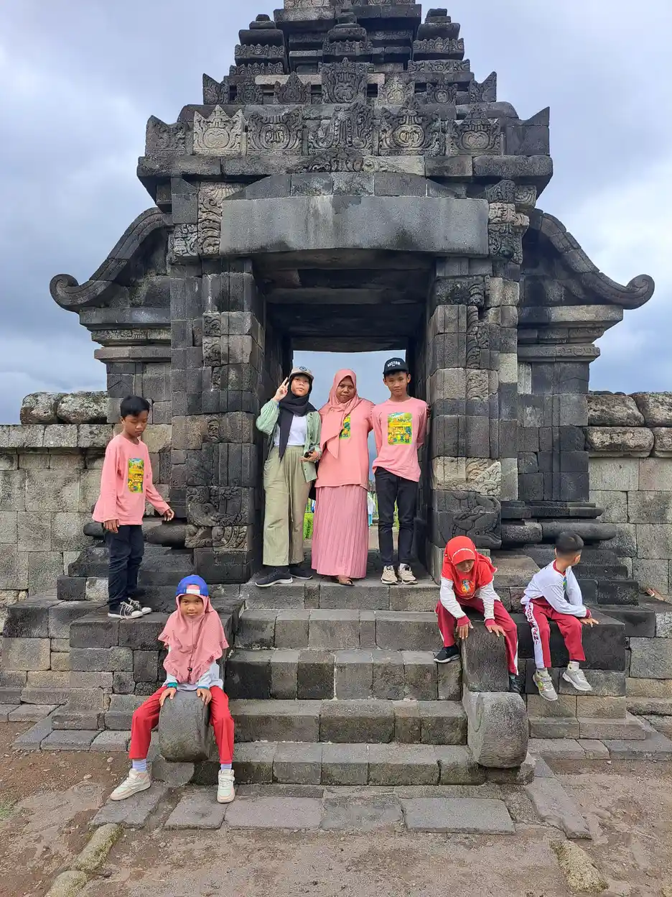
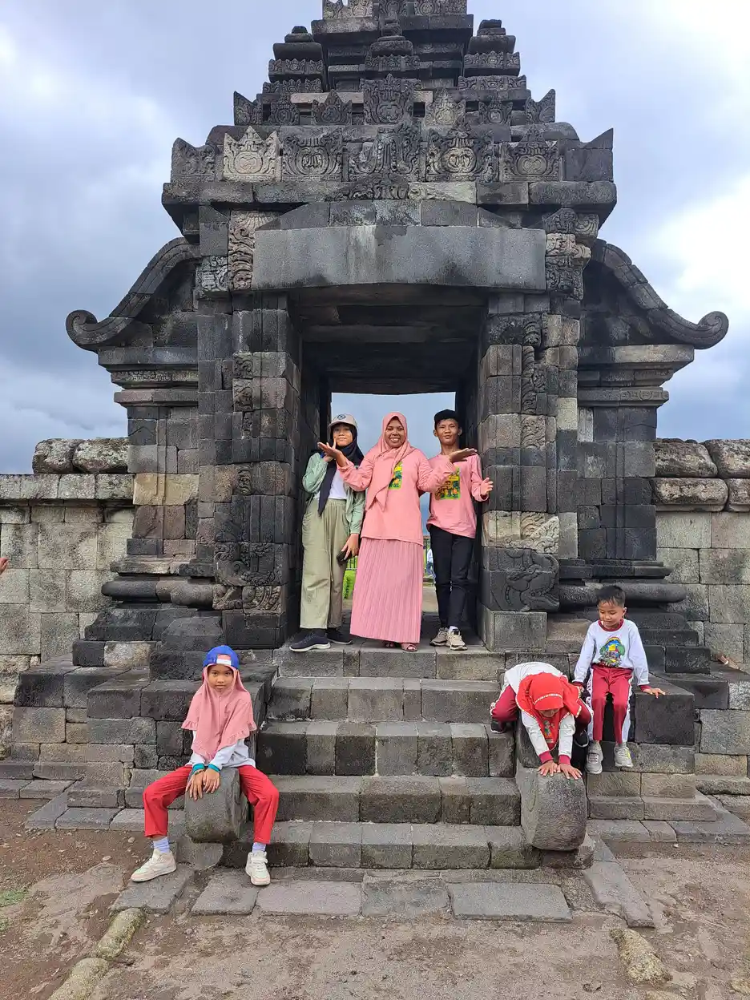
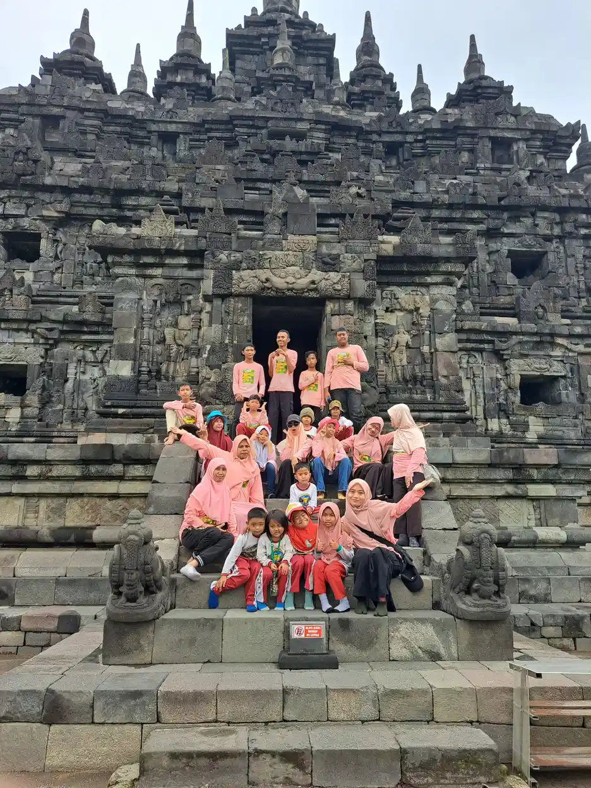

Zat besi dan perkembangan kognitif anak berkaitan karena mineral ini mendukung pengangkutan oksigen serta perkembangan saraf. Namun, sulit fokus atau kesulitan belajar bukan bukti anak kekurangan zat besi. Kecukupan gizi penting, sedangkan diagnosis dan keputusan pengobatan memerlukan tenaga kesehatan. Suplemen bukan jalan pintas untuk meningkatkan kecerdasan.
Ketika anak tampak mudah lelah atau tidak mengikuti pelajaran seperti biasanya, orang tua mungkin mencari penjelasan dari makanan. Pertanyaan tersebut wajar, tetapi jawaban yang terlalu sederhana dapat menunda bantuan yang sebenarnya dibutuhkan. Pembahasan gizi sebaiknya membuka percakapan tentang kesehatan anak, bukan menjadi penilaian bahwa keluarga kurang berusaha atau anak tidak mau belajar.
Daftar Isi
- Peran zat besi bagi tubuh dan proses belajar
- Kekurangan zat besi tidak sama dengan anemia
- Membaca bukti kognitif tanpa menjanjikan kecerdasan
- Mengamati keluhan tanpa memberi label diagnosis
- Risiko yang layak dibicarakan dengan dokter
- Hemoglobin, ferritin, dan konteks peradangan
- Sumber pangan dan konteks penyajiannya
- Saat pilihan makanan anak sangat terbatas
- Menyiapkan konsultasi yang tidak menyalahkan keluarga
- Batas suplemen dan keselamatan di rumah
- Dukungan sekolah sambil menilai kesehatan
- Langkah keluarga yang realistis dan menyeluruh
- Pertanyaan Umum tentang Zat Besi dan Kognitif
Peran zat besi bagi tubuh dan proses belajar
Menurut NIH Office of Dietary Supplements, zat besi merupakan komponen hemoglobin, protein pada sel darah merah yang membawa oksigen dari paru ke jaringan tubuh. Mineral ini juga diperlukan untuk pertumbuhan fisik, perkembangan saraf, dan kerja sel. Jadi, alasan memperhatikan zat besi bukan sekadar mengejar angka rapor, melainkan mendukung fungsi tubuh secara keseluruhan.
Proses belajar melibatkan perhatian, ingatan, bahasa, pengolahan informasi, serta kesempatan mencoba. Dalam penelitian biologis, zat besi mempunyai peran pada metabolisme energi dan proses saraf. Akan tetapi, mengetahui bahwa tubuh membutuhkan mineral ini tidak berarti tambahan zat besi akan memperbaiki semua hambatan belajar. Kebutuhan dasar yang tercukupi berbeda dari pemberian zat tambahan kepada anak yang belum dinilai kekurangan.
Anak juga belajar melalui rasa aman, kegiatan yang dapat diakses, komunikasi yang dipahami, dan pengalaman bersama orang lain. Kesehatan merupakan salah satu bagian dari jejaring tersebut. Bila anak cepat lelah, langkah yang membantu adalah mengenali perubahan dan meminta penilaian, bukan membandingkan kecerdasannya dengan teman. Baca konteks kesulitan belajar pada anak agar perhatian tidak terkunci pada satu kemungkinan penyebab saja.
Tujuan keluarga dapat dirumuskan dengan bahasa sehari-hari: anak lebih nyaman mengikuti kegiatan, bisa menyampaikan kebutuhan, dan memperoleh dukungan yang sesuai. Tujuan ini tetap penting apa pun hasil pemeriksaan zat besinya nanti. Hasil laboratorium bukan ukuran nilai diri anak, dan perbedaan perkembangan tidak mengurangi haknya untuk belajar.
Kekurangan zat besi tidak sama dengan anemia
Kekurangan zat besi berarti persediaan atau ketersediaan zat besi tidak memadai untuk kebutuhan tubuh. Anemia merujuk pada keadaan ketika hemoglobin atau sel darah merah berada di bawah yang semestinya menurut penilaian klinis. Keduanya berhubungan, tetapi bukan istilah yang dapat saling menggantikan. NIH ODS menjelaskan bahwa cadangan besi dapat menurun sebelum hemoglobin menjadi rendah.
Karena itu, anak dapat mengalami kekurangan zat besi tanpa anemia. Di sisi lain, hasil hemoglobin rendah tidak langsung membuktikan kekurangan zat besi sebagai penyebab. WHO menjelaskan anemia dapat berhubungan dengan kekurangan beberapa zat gizi, infeksi, peradangan, penyakit kronis, kehilangan darah, atau kelainan sel darah yang diturunkan. Menentukan penyebab merupakan bagian penting dari pemeriksaan.
Perbedaan ini berguna saat membaca hasil pemeriksaan anak. Komentar seperti darahnya kurang tidak cukup untuk menentukan obat. Orang tua boleh meminta dokter menerangkan apakah yang ditemukan adalah anemia, cadangan besi rendah, keduanya, atau keadaan lain. Tidak perlu menghafal batas angka dari internet karena konteks usia, kondisi kesehatan, dan cara pemeriksaan ikut dipertimbangkan.
Pemisahan istilah juga mencegah kesimpulan yang menyalahkan makanan keluarga. Bila anemia berkaitan dengan kondisi lain, menambah makanan tertentu saja belum menjawab masalahnya. Sebaliknya, hasil hemoglobin yang belum rendah bukan alasan mengabaikan keluhan menetap. Pertanyaan lanjutan sebaiknya diarahkan kepada tenaga kesehatan yang mengetahui riwayat anak, bukan kepada penjual suplemen atau unggahan promosi.

Membaca bukti kognitif tanpa menjanjikan kecerdasan
Penelitian menghubungkan kekurangan zat besi dengan beberapa hasil perkembangan, tetapi hubungan tidak selalu membuktikan sebab akibat. Studi observasional membandingkan keadaan anak tanpa mengendalikan seluruh pengalaman hidup mereka. Kesehatan lain, kecukupan gizi secara umum, dan kondisi sosial dapat memengaruhi hasil. Temuan kelompok tidak dapat dipakai untuk menyatakan penyebab kesulitan seorang anak hanya dari perilakunya.
Penelitian di Pediatrics, jurnal American Academy of Pediatrics, mengamati hubungan kekurangan zat besi kronis dan fungsi kognitif pada awal masa kanak-kanak. Penulis secara jelas menyebut rancangan observasional. Temuan ini mendukung pentingnya perhatian terhadap kesehatan, tetapi bukan uji yang membuktikan bahwa suplemen menaikkan IQ setiap anak.
Tinjauan sistematis tentang zat besi dan perkembangan otak juga menjelaskan bahwa bukti biologis perlu dibedakan dari hasil penelitian manusia yang beragam. Perbedaan rancangan, kelompok peserta, dan cara mengukur perkembangan membatasi kesimpulan. Perbaikan satu hasil pemeriksaan tidak otomatis sama dengan perbaikan seluruh kemampuan belajar atau prestasi sekolah.
Dengan demikian, pesan yang proporsional bukan bahwa zat besi tidak penting, melainkan bahwa manfaat harus dikaitkan dengan kebutuhan nyata dan kondisi anak. Jangan menjanjikan kecerdasan, menganggap masa depan sudah ditentukan oleh satu hasil tes, atau menyebut orang tua terlambat memperbaiki anak. Dukungan perkembangan tetap mempunyai tempat dan sebaiknya berjalan bersama penanganan kesehatan yang memang diperlukan.
Mengamati keluhan tanpa memberi label diagnosis
Mudah lelah, pucat, dan berkurangnya energi termasuk keluhan yang dapat muncul pada anemia. NHS membahas gejala anemia defisiensi besi sekaligus perlunya pemeriksaan untuk menilai penyebabnya. Keluhan tersebut tidak khusus untuk kekurangan zat besi. Anak yang tampak pucat pada satu foto, misalnya, tidak dapat didiagnosis dari pencahayaan atau warna kulit pada layar.
Sulit fokus pun dapat berkaitan dengan banyak hal. Tidur yang kurang nyaman, nyeri, kecemasan, masalah penglihatan atau pendengaran, kebutuhan sensori, serta pelajaran yang belum diadaptasi bisa menjadi bagian pembahasan profesional. Jangan menyamakan tidak menyelesaikan tugas dengan kekurangan mineral. Panduan gangguan belajar spesifik membantu membedakan kebutuhan pendidikan dari dugaan penyakit yang belum diperiksa.
Catatan yang berguna menjelaskan perubahan dibanding kebiasaan anak: kegiatan apa yang lebih sulit, apakah lelah muncul pada berbagai tempat, dan apakah ada keluhan tubuh yang menyertai. Hindari daftar centang yang berakhir dengan diagnosis sendiri. Foto aktivitas, nilai sekolah, atau komentar anak malas juga bukan pengganti riwayat kesehatan dan pemeriksaan langsung.
Bila anak kesulitan menyampaikan keluhan, sediakan cara komunikasi yang sudah dikenalnya. Pilihan gambar, gerakan, atau komunikasi alternatif dan augmentatif dapat membantu percakapan tentang kenyamanan. Tujuannya mendengar pengalaman anak, bukan menguji apakah ia mempunyai gejala tertentu. Bila perubahan menetap, mengkhawatirkan, atau mengganggu kegiatan, bicarakan dengan dokter tanpa menunggu masalah belajar menjadi berat.
Risiko yang layak dibicarakan dengan dokter
Penilaian risiko dimulai dari riwayat, bukan dari penampilan atau diagnosis perkembangan. NIH ODS menyebut kebutuhan yang meningkat selama pertumbuhan, asupan yang tidak mencukupi, serta keadaan kesehatan tertentu sebagai konteks penting. Riwayat lahir prematur atau berat lahir rendah dapat relevan bagi dokter. Informasi ini membantu menentukan perhatian yang sesuai, bukan memberi keluarga rumus untuk menetapkan kekurangan sendiri.
Pilihan makanan yang sangat terbatas juga layak dibahas, terutama bila sejumlah kelompok pangan hampir tidak pernah diterima. Namun, anak yang pilih-pilih makanan belum tentu kekurangan zat besi. Jumlah makanan yang diterima, sumber gizinya, pertumbuhan, keluhan pencernaan, dan riwayat kesehatan perlu dilihat bersama. Jangan menambahkan pembatasan baru hanya karena membaca bahwa suatu bahan menghambat penyerapan dalam kondisi penelitian tertentu.
Kehilangan darah, masalah penyerapan, penyakit yang berlangsung lama, atau menstruasi pada remaja dapat menjadi bagian penilaian dokter. Orang tua tidak perlu menentukan penyebab terlebih dahulu sebelum meminta bantuan. Sampaikan keadaan yang diketahui dengan jujur, termasuk obat dan suplemen yang sedang digunakan, tanpa merasa harus memberikan penjelasan sempurna. Informasi yang belum diketahui boleh dinyatakan belum diketahui.
Khusus pada anak autis, diagnosis autisme tidak berarti seluruh anak membutuhkan suplemen zat besi. Kebutuhan bersifat individual dan tidak boleh disimpulkan dari label. Baca pengertian autisme serta kesulitan makan pada anak berkebutuhan khusus untuk memahami mengapa dukungan makan perlu mempertimbangkan kenyamanan, komunikasi, kemampuan makan, dan kesehatan sekaligus.
Hemoglobin, ferritin, dan konteks peradangan
Dokter dapat mempertimbangkan pemeriksaan darah berdasarkan riwayat dan temuan klinis. Hemoglobin membantu menilai anemia, sedangkan ferritin dapat membantu menggambarkan cadangan zat besi. Kedua hasil ini tidak menjawab pertanyaan yang persis sama. Karena itu, menilai kesehatan anak hanya dari satu kata normal pada lembar pemeriksaan bisa melewatkan konteks yang perlu dijelaskan.
NIH ODS menegaskan bahwa ferritin dapat dipengaruhi peradangan. Saat ada infeksi atau proses peradangan lain, ferritin bisa meningkat sehingga tidak cukup ditafsirkan sendirian. Dokter mungkin perlu menghubungkannya dengan keluhan, pemeriksaan fisik, hemoglobin, serta penanda atau pemeriksaan tambahan sesuai kebutuhan. Artikel ini sengaja tidak memberi batas angka diagnosis karena hasil laboratorium harus ditafsirkan oleh profesional.
Pertanyaan yang membantu antara lain: apakah hasil ini menunjukkan anemia, bagaimana cadangan besinya dinilai, dan apakah kondisi sakit saat pemeriksaan memengaruhi interpretasi? Tanyakan pula alasan suatu pemeriksaan dianjurkan dan bagaimana hasilnya akan mengubah keputusan. Tujuannya memahami rencana perawatan, bukan meminta semua jenis pemeriksaan atau mengulang tes berdasarkan saran yang tidak mengenal kondisi anak.
Bawa hasil sebelumnya bila tersedia agar dokter dapat melihat gambaran lebih lengkap. Jika pemeriksaan darah sulit bagi anak, diskusikan penyesuaian komunikasi dan lingkungan. Pengalaman tersebut dapat dipersiapkan dengan dukungan yang tidak memaksa atau mempermalukan. Jangan menghentikan, menambah, atau mencoba pengobatan untuk mengejar angka tertentu tanpa penjelasan tenaga kesehatan yang bertanggung jawab terhadap perawatan anak.

Sumber pangan dan konteks penyajiannya
Sumber pangan zat besi dapat berasal dari makanan hewani maupun nabati. NIH ODS membedakan zat besi heme dan nonheme; pangan nabati serta pangan fortifikasi terutama menyediakan bentuk nonheme. Perbedaan penyerapan tidak membuat makanan nabati tidak berguna. Yang perlu diperhatikan adalah pola makan keseluruhan, pilihan yang tersedia, dan kecocokan makanan bagi kemampuan serta kondisi anak.
Vitamin C dalam pangan dapat membantu penyerapan zat besi nonheme. Ini merupakan alasan untuk menawarkan ragam makanan, bukan kewajiban membeli vitamin tambahan. Sajian perlu disesuaikan dengan usia, alergi, kemampuan mengunyah dan menelan, serta keamanan pangan. Bila anak mempunyai masalah menelan atau mudah tersedak, minta penilaian profesional sebelum mengubah bentuk makanan.
| Kelompok pangan | Contoh dan konteks | Pertanyaan praktis untuk profesional |
|---|---|---|
| Daging, ikan, dan unggas | Dapat menyumbang zat besi; kandungan berbeda menurut bahan dan olahan. | Bagaimana bentuk yang aman dan dapat diterima anak dengan kemampuan makan saat ini? |
| Kacang-kacangan dan olahannya | Sumber nonheme seperti kacang dan tahu dapat menjadi bagian variasi pangan. | Apa alternatif bila ada alergi, pembatasan medis, atau kesulitan tekstur? |
| Sayuran dan buah | Sayuran tertentu menyumbang zat besi; buah atau sayuran bervitamin C mendukung variasi. | Bagaimana memperluas pilihan tanpa menghilangkan makanan yang sudah diterima? |
| Pangan yang difortifikasi | Periksa label untuk mengetahui zat besi yang ditambahkan; bukan jaminan memenuhi seluruh kebutuhan. | Apakah pangan ini relevan dalam pola makan anak, bukan sekadar klaim pemasaran? |
Tabel ini tidak menetapkan porsi pengobatan atau pengganti pemeriksaan. Kandungan makanan dapat berbeda, dan satu bahan tidak mewakili seluruh pola makan. Kegiatan belajar memasak yang aksesibel boleh menjadi pengalaman mengenal pangan bila anak nyaman, tetapi keberhasilan kegiatan tidak dinilai dari kewajiban menghabiskan makanan atau perubahan kemampuan kognitif.
Saat pilihan makanan anak sangat terbatas
Sebagian keluarga telah berusaha keras tetapi anak hanya menerima makanan dengan tekstur, suhu, atau bentuk tertentu. Keadaan ini tidak semestinya dijawab dengan komentar bahwa orang tua kurang tegas. Kesulitan makan dapat melibatkan pengalaman sensori, nyeri, keterampilan oral, komunikasi, serta pengalaman sebelumnya. Penilaian perlu memahami hambatan yang terjadi, bukan menganggap penolakan sebagai perilaku buruk.
Jangan menghilangkan seluruh makanan yang diterima anak demi memaksanya menerima bahan kaya zat besi. Langkah seperti itu dapat mempersempit asupan dan meningkatkan ketegangan. Pertahankan akses pada makanan yang aman bagi anak sambil meminta bantuan dokter dan tenaga gizi atau dietisien. Jika perlu, profesional terkait kemampuan makan dapat dilibatkan berdasarkan masalah yang ditemukan.
Catatan makanan tidak perlu menjadi pengawasan yang membuat anak tertekan. Jelaskan pilihan yang biasanya diterima, bahan yang belum pernah dicoba, perubahan mendadak, keluhan nyeri, dan situasi yang membuat makan lebih nyaman. Informasi ini membantu penyusunan pilihan realistis. Kemajuan dapat berupa anak lebih nyaman berada di meja makan atau mampu menyampaikan tidak nyaman, bukan hanya jumlah suapan.
Panduan mendampingi anak autis dapat melengkapi pendekatan yang menghormati komunikasi dan kebutuhan sensori. Bila keluarga mendapat saran diet pembatasan, tanyakan alasan medis, risiko kekurangan zat gizi, dan rencana penggantinya. Jangan menganggap diet yang semakin ketat sebagai bukti perawatan yang semakin baik. Kecukupan gizi perlu dilindungi bersama kenyamanan dan hubungan anak dengan makanan.

Menyiapkan konsultasi yang tidak menyalahkan keluarga
Konsultasi dapat dimulai dengan keluhan utama: apa yang berubah, bagaimana dampaknya bagi kegiatan, dan apa yang paling dikhawatirkan anak atau keluarga. Bawa riwayat pertumbuhan, hasil pemeriksaan yang sudah ada, daftar obat dan suplemen, serta gambaran makan. Catatan tersebut bukan bukti untuk membela pengasuhan, melainkan alat membantu tenaga kesehatan melihat kebutuhan secara lebih utuh.
Mintalah penjelasan yang dapat dipahami mengenai kemungkinan penyebab. Bila dokter menyebut anemia, tanyakan apakah penyebabnya sudah jelas dan apakah kekurangan zat besi merupakan bagian temuan. Bila tes belum diperlukan, tanyakan alasan dan tanda perubahan yang perlu disampaikan kembali. Orang tua boleh meminta penjelasan ulang tanpa merasa bahwa pertanyaan sederhana mengganggu proses pemeriksaan.
Diskusikan pula hambatan praktis: biaya, jarak layanan, kesulitan mengambil darah, keterbatasan bahan makanan, atau kekhawatiran anak. Rencana yang tidak mempertimbangkan keadaan keluarga bisa sulit dijalankan. Membahas hambatan bukan berarti menolak perawatan. Dukungan keluarga anak berkebutuhan khusus penting agar tanggung jawab tidak seluruhnya dibebankan pada satu orang pengasuh.
Jika sekolah memberikan pengamatan, pilih informasi faktual seperti anak meminta istirahat lebih sering atau kesulitan mengikuti instruksi tertentu. Hindari menyerahkan label malas atau pasti anemia sebagai kesimpulan. Dengan komunikasi yang saling menghormati, kebutuhan kesehatan dan pendidikan dapat dibicarakan tanpa mempermalukan anak atau menyederhanakan persoalan menjadi kesalahan keluarga.
Batas suplemen dan keselamatan di rumah
Artikel ini tidak memberikan dosis suplemen, jadwal penggunaan, merek, atau langkah mencoba zat besi sebagai pengobatan mandiri. Suplemen perlu dipertimbangkan oleh tenaga kesehatan sesuai tujuan, kondisi, dan rencana pemantauan. Bila anak sudah mendapat resep, pertanyaan mengenai penggunaannya, efek yang dirasakan, atau perubahan terapi perlu disampaikan kepada pemberi resep, bukan diputuskan dari artikel umum.
NHS mengingatkan bahwa overdosis zat besi pada anak dapat berakibat fatal. Simpan obat dan suplemen dalam kemasan aslinya, jauh dari jangkauan anak dan sebaiknya dalam tempat terkunci. Jangan memindahkannya ke wadah makanan atau menganggap kemasan aman anak berarti tidak mungkin dibuka. Pengasuh lain juga perlu mengetahui bahwa produk tersebut bukan permen atau barang bermain.
Jika anak mungkin menelan suplemen zat besi berlebihan, segera cari pertolongan medis darurat atau ke IGD, meskipun belum ada gejala. Jangan menunggu anak tampak sakit, jangan memancing muntah, dan jangan mencoba penanganan rumahan. Bawa kemasan bila aman untuk membantu identifikasi oleh tenaga kesehatan. Kecurigaan tertelan zat berbahaya sudah cukup untuk mencari bantuan.
Panduan keracunan NHS menegaskan bahwa gejala dapat tertunda dan orang yang diduga menelan bahan berbahaya tidak boleh dibuat muntah. Di luar kejadian tertelan obat, anak yang sulit bernapas, pingsan, mengalami kejang, atau tampak sangat lemah juga membutuhkan pertolongan segera. Jangan menunda bantuan sambil menunggu makanan atau suplemen bekerja.
Dukungan sekolah sambil menilai kesehatan
Pemeriksaan kesehatan tidak harus membuat kebutuhan belajar ditangguhkan. Guru dapat mendengarkan keluhan, menyesuaikan beban kegiatan, dan menyediakan cara anak meminta bantuan. Bila anak terlihat lelah, percakapan tentang kenyamanan lebih berguna daripada hukuman karena tugas belum selesai. Penyesuaian bukan diagnosis dan tidak menyatakan bahwa zat besi merupakan penyebab perilaku di kelas.
Pada saat yang sama, jangan menjadikan kemungkinan kekurangan gizi sebagai alasan mencabut dukungan perkembangan. Anak mungkin tetap membutuhkan instruksi yang lebih jelas, alat komunikasi, atau materi yang dapat diakses. Pembahasan program pembelajaran individual membantu menyusun sasaran berdasarkan kebutuhan nyata. Sasaran tersebut dapat dievaluasi bersama tanpa menuntut hasil yang seragam bagi semua anak.
Komunikasi rumah dan sekolah sebaiknya menjaga privasi. Hasil darah, diagnosis, atau penggunaan obat tidak perlu diumumkan kepada seluruh kelas. Bagikan informasi yang relevan dengan dukungan dan keselamatan sesuai persetujuan keluarga. Foto kegiatan juga tidak boleh diberi narasi bahwa peserta mempunyai kekurangan mineral atau telah mengalami perubahan klinis hanya karena berada dalam artikel tentang kesehatan.
Orang tua dan guru dapat memakai bahasa yang sama: anak sedang mengalami kesulitan tertentu dan membutuhkan penyesuaian. Pendekatan tersebut selaras dengan peran orang tua dalam pendidikan inklusi. Perhatian pada gizi menjadi bagian dukungan, bukan syarat agar anak dianggap layak mengikuti kegiatan, diterima di sekolah, atau mendapatkan kesempatan belajar bersama teman.

Langkah keluarga yang realistis dan menyeluruh
Mulailah dengan membedakan tiga hal: informasi umum tentang gizi, pengamatan terhadap anak, dan diagnosis tenaga kesehatan. Artikel dapat membantu memahami istilah dan menyusun pertanyaan, tetapi tidak mengubah pengamatan menjadi kepastian penyakit. Bila keluhan menetap atau ada risiko yang perlu dinilai, konsultasi merupakan langkah yang lebih bermakna daripada menambah produk tanpa mengetahui masalah yang hendak ditangani.
Untuk kehidupan sehari-hari, arahkan perhatian pada akses makanan beragam yang sesuai kemampuan anak dan keadaan keluarga. Pilihan terjangkau, kenyamanan makan, serta dukungan pengasuh lebih penting daripada mengejar satu bahan yang dipromosikan sebagai makanan otak. Bila ada keterbatasan, sampaikan kepada profesional agar rencana tidak hanya baik di atas kertas tetapi juga mungkin diterapkan dengan aman.
Hargai pula kebutuhan belajar dan komunikasi yang tidak dapat diringkas menjadi zat gizi. Anak berhak didengar ketika lelah, bingung, atau tidak nyaman. Dukungan pendidikan tidak perlu menunggu keluarga membuktikan penyebab medis. Bila ingin mengenali konteks perkembangan lebih luas, baca makna tonggak perkembangan anak, lalu gunakan informasi tersebut sebagai bahan percakapan, bukan alat membandingkan nilai seorang anak.
Kesimpulannya, zat besi penting bagi tubuh dan perkembangan, tetapi tambahan zat besi bukan janji kecerdasan. Bedakan kekurangan zat besi dari anemia, tafsirkan laboratorium bersama dokter, dan lindungi anak dari eksperimen suplemen serta risiko keracunan. Informasi tentang program pendampingan YUKA dapat membantu keluarga mengenali dukungan pendidikan; layanan pendidikan tersebut tidak menggantikan diagnosis atau penanganan medis oleh tenaga kesehatan.
Pertanyaan Umum tentang Zat Besi dan Kognitif
Apa hubungan zat besi dan perkembangan kognitif anak?
Zat besi mendukung pengangkutan oksigen dan fungsi perkembangan saraf. Kekurangan zat besi dikaitkan dengan hasil perkembangan tertentu, tetapi hubungan penelitian tidak dapat digunakan untuk mendiagnosis penyebab kesulitan belajar seorang anak. Penilaian perlu mempertimbangkan kesehatan, komunikasi, lingkungan, dan kebutuhan pendidikan secara menyeluruh.
Apakah kekurangan zat besi selalu berarti anemia?
Tidak. Cadangan zat besi dapat berkurang sebelum hemoglobin turun sehingga kekurangan zat besi dapat terjadi tanpa anemia. Sebaliknya, anemia mempunyai berbagai penyebab selain kekurangan zat besi. Dokter menggabungkan riwayat, pemeriksaan, dan hasil laboratorium untuk membedakannya.
Apakah anak sulit fokus pasti kekurangan zat besi?
Tidak. Sulit fokus merupakan keluhan yang tidak spesifik. Tidur, nyeri, kecemasan, masalah penglihatan atau pendengaran, kebutuhan komunikasi, dan cara pembelajaran juga perlu dipertimbangkan. Jangan mencoba suplemen sebagai tes diagnosis; konsultasikan bila keluhan menetap atau mengganggu kegiatan anak.
Apakah ferritin normal pasti menyingkirkan kekurangan zat besi?
Tidak selalu. Ferritin membantu menggambarkan cadangan zat besi, tetapi dapat meningkat saat infeksi atau peradangan. Dokter menafsirkan ferritin bersama kondisi klinis, hemoglobin, dan pemeriksaan lain bila diperlukan. Jangan menetapkan diagnosis atau mengubah pengobatan berdasarkan satu angka laboratorium sendiri.
Apakah semua anak autis membutuhkan suplemen zat besi?
Tidak. Autisme saja bukan indikasi bahwa anak kekurangan zat besi atau wajib mendapat suplemen. Pola makan terbatas, pertumbuhan, gejala, serta riwayat kesehatan dapat menjadi alasan penilaian individual. Keputusan suplemen berada pada tenaga kesehatan, bukan berdasarkan label diagnosis perkembangan.
Apakah makanan kaya zat besi menjamin IQ meningkat?
Tidak. Makanan beragam mendukung kecukupan gizi dan kesehatan, tetapi tidak menjamin kenaikan IQ atau prestasi tertentu. Memperbaiki kekurangan yang terdiagnosis juga tidak menggantikan dukungan belajar, komunikasi, dan perkembangan. Tidak ada satu makanan yang dapat menjadi ukuran kecerdasan atau keberhasilan pengasuhan.
Apa yang harus dilakukan jika anak mungkin menelan suplemen zat besi berlebihan?
Segera cari pertolongan medis darurat atau bawa anak ke IGD, meskipun belum tampak gejala. Kelebihan zat besi dapat mengancam nyawa. Jangan memancing muntah, jangan menunggu gejala, dan jangan mencoba penanganan rumahan. Bawa kemasan bila aman agar tenaga kesehatan dapat mengenali zat yang mungkin tertelan.
Bacaan Terkait
Sumber dan Referensi
- WHO: Anaemia, penyebab dan konteks perkembangan
- NIH ODS: Iron, fungsi, pangan, dan penilaian status besi
- Pediatrics / AAP: Chronic Iron Deficiency and Cognitive Function in Early Childhood (2022)
- The Role of Iron in Brain Development: A Systematic Review (2020)
- NHS: Iron deficiency anaemia, gejala dan peringatan overdosis
- NHS: Poisoning, pertolongan segera dan larangan memancing muntah
Catatan: Artikel ini bersifat edukasi umum dan bukan pengganti konsultasi dengan psikolog, tenaga kesehatan, atau petugas layanan sosial resmi. Sumber dibaca dan diperiksa 17 Oktober 2026. Artikel merupakan edukasi editorial, bukan tinjauan klinis dokter.